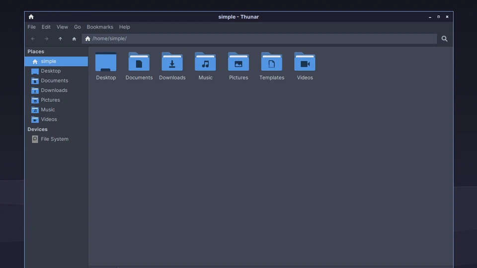
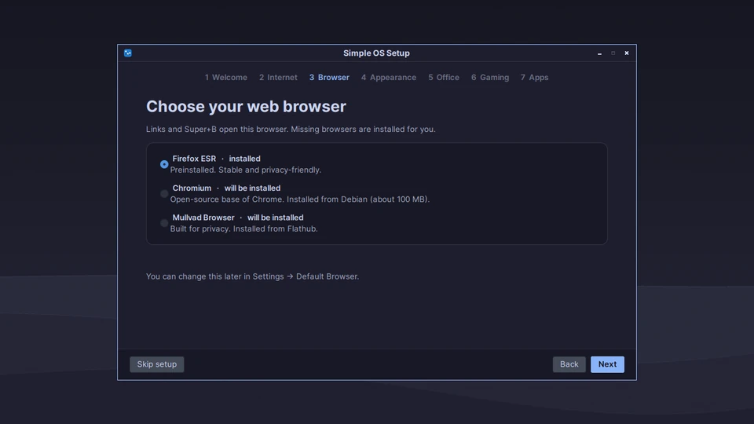
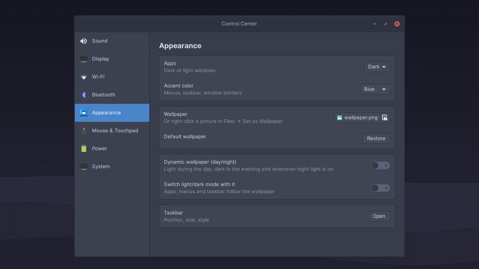
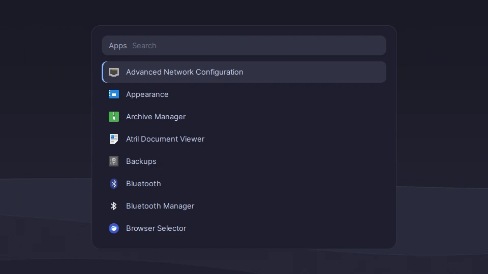

What is Simple OS?
Simple OS (SOS, short for Simple Operating System) is a Linux distribution for normal PCs and laptops. It's based on Debian 12 and uses the Openbox window manager, with its own set of tools on top.
The idea is that you shouldn't need a terminal or any Linux knowledge. On the first login, the Setup Wizard asks a few questions (Wi-Fi, browser, office apps, gaming) and installs what you picked. After that, updates are installed through the Software Updates app, and that includes new versions of Simple OS itself.
You can try Simple OS from a USB stick before you install it. Nothing on your computer changes until you start the installer.
What's included
| Part | What it does |
|---|---|
| Setup Wizard | Runs on the first login. Sets up network, browser, theme, office suite, gaming and the Software Store. You can start it again from the menu. |
| Control Center | Display, sound, Bluetooth, Wi-Fi, mouse & touchpad, date & time, keyboard, appearance, taskbar, power, storage, printers & scanners, drivers, security and updates. |
| Software Store | Install apps from Flathub. |
| Software Updates | Updates Debian packages, Flatpak apps, firmware and Simple OS itself. |
| Backups | Timeshift, for restoring the system to an earlier state. |
| Security | Firewall (ufw) is switched on from the start. Secure Boot is supported. |
| Hardware | Drivers are detected automatically. Firmware updates through LVFS. Battery and power settings for laptops, including a charge limit on models that support it (most Lenovo, ASUS, Dell, HP and Framework laptops). |
| Languages | Language packs for the language you choose in the installer, and fonts for Arabic, Hebrew, Thai, Hindi, Chinese, Japanese and more. |
| Tools | Search launcher, window snapping, task manager, power menu, Storage Cleaner and “Report a problem”. |
Screenshots
Simple OS in dark mode with the blue accent. Click a picture to see it in full size.








Keyboard shortcuts
The Super key is the key with the Windows logo on most keyboards.
| Keys | Action |
|---|---|
| Super + H | Show all keyboard shortcuts |
| Super + I | Open the Control Center |
| Super + P | Change the display mode, for example for a second monitor or a projector |
| Super + L | Lock the screen |
| Media keys | Volume and media keys on the keyboard work |
Technical details
| Based on | Debian 12 “Bookworm”, kernel and firmware from bookworm-backports |
|---|---|
| Desktop | Openbox, tint2 taskbar, Rofi menus, dunst notifications, picom |
| Look | Catppuccin Mocha (light and dark mode, accent colors), Inter font, Papirus icons |
| Login | LightDM |
| Installer | Calamares |
| Boot | GRUB, Secure Boot through shim |
| Apps | Flathub through Bazaar |
| Updates | Signed APT repository on GitHub, plus Flatpak and fwupd |
| Memory | earlyoom keeps the system responsive when memory runs low |
| Built with | Debian live-build |
| License | GPL-3.0 |
Requirements
Official minimum requirements haven't been published yet. To install Simple OS you need:
- A PC or laptop that can start from a USB stick
- A USB stick with at least 2 GB (everything on it will be erased)
- An internet connection, so the Setup Wizard can install apps and updates
Every release is tested in virtual machines (BIOS, UEFI and UEFI with Secure Boot). Tests on real hardware currently happen on a Lenovo ThinkPad E16 and a ThinkBook. Help with testing on other computers is very welcome.
Installation
Back up your files first. Installing Simple OS can erase the disk you install it on.
- Download
Simple-OS.iso. If you want, check the download with the checksum. - Write the ISO to a USB stick with a program like balenaEtcher or Rufus.
- Restart the computer and open the boot menu. The key depends on the computer; it's often F12, F11, F8 or Esc. Choose the USB stick.
- Simple OS starts as a live system. You can look around; nothing is installed yet.
- Double-click the install icon on the desktop and follow the installer.
- Restart and log in. The Setup Wizard opens and helps you with the rest.
On some Lenovo laptops a “Self-Healing BIOS ESP” message appears once on the first start after installing. That's the Lenovo firmware adjusting to the new disk layout. It's harmless and doesn't come back.
Updates
Simple OS checks for updates 2 minutes after you log in, every 12 hours, and when the computer wakes up from sleep. Updates are installed with the Software Updates app.
New versions of Simple OS come the same way, so you never have to reinstall. Settings you changed yourself are kept when a new version is installed. BIOS and firmware updates are only installed while a laptop is plugged in, and only if the manufacturer offers them through LVFS.
Support period
Simple OS 1.x is based on Debian 12. Debian provides security updates for it until June 2028 (Debian LTS), and Simple OS passes them on through Software Updates.
A new version based on Debian 13, Simple OS 2.0, is planned. A preview is planned for early 2027. See the roadmap.
Known issues
| Problem | What you can do |
|---|---|
| The Simple OS tools (Setup Wizard, Control Center, messages) are only in English. Firefox, LibreOffice and the dictionaries do follow your language. | You can change the keyboard layout at any time in Control Center → Keyboard. Translations are planned for 1.1. |
| The firewall blocks hosting LAN games and Steam Remote Play as host. | Turn the firewall off in Control Center → Password & Security while you play, and back on afterwards. |
| NVIDIA drivers only work with Secure Boot turned off. Simple OS itself starts with Secure Boot on. | Turn off Secure Boot in the firmware settings (BIOS/UEFI), then install the driver in Control Center → System & Updates → Hardware & Drivers. |
| Some programs are older versions than on other distributions, because Simple OS is based on Debian 12. | Apps from the Software Store (Flathub) are up to date. Simple OS 2.0 will move to Debian 13. |
Version history
| Version | Date | Main changes |
|---|---|---|
| 1.0.5 | 17 Oct 2026 | New ISO; clearer menus and smaller Control Center pages; default apps and startup apps; battery level of Bluetooth headphones; calendar when you click the clock; the clock stays right next to Windows; “What's new” window after updates; signing out and in again works fully; Y and Z no longer swapped in search with Swiss and German keyboards. |
| 1.0.4 | 14 Oct 2026 | New ISO with a safer installer (runs only once, no switching off while it works, “remove the USB stick”); screen lock when idle and videos keep the screen on; power button opens the power menu; brightness slider; Wi-Fi country from the time zone; git; installations in other languages get their language and language packs; keyring works from the first login; install next to another system on older BIOS PCs; other systems stay in the boot menu. |
| 1.0.3 | 9 Oct 2026 | Night light fixed on real hardware; new Mouse & Touchpad and Date & Time settings; option to limit Wi-Fi to 2.4 GHz; monitors, projectors and TVs turn on automatically; better sound on newer laptops; fonts for more languages; adds curl, wget, zip, unzip, ssh and OpenVPN. |
| 1.0.2 | 9 Oct 2026 | Clock set over the internet; app autostart works; picture and PDF previews in the file manager; keyring set up to unlock at login; hardware video decoding on Intel and AMD; media keys and Super + L; fixes for NVIDIA RTX 50 and Bluetooth pairing. |
| 1.0.1 | 8 Oct 2026 | Automatic update checks; Store app updates in Software Updates; office menu follows what's installed; 32-bit libraries for Steam on older NVIDIA cards. |
| 1.0 | 7 Oct 2026 | First release. |
What's next
1.1 adds display scaling for high-resolution screens, a Language & Region page with translations, and a page for user accounts. Bug-fix updates come in between, about every two to three weeks. Everything else is on the roadmap.